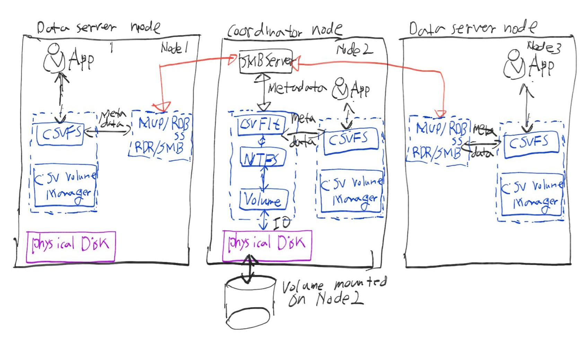
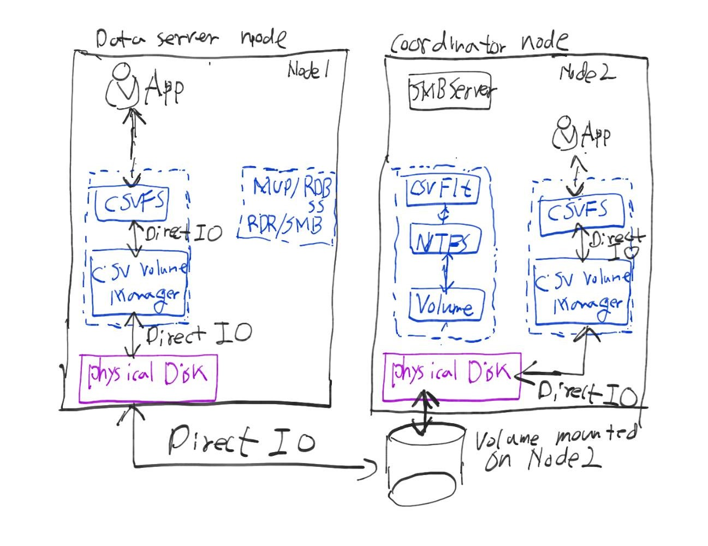
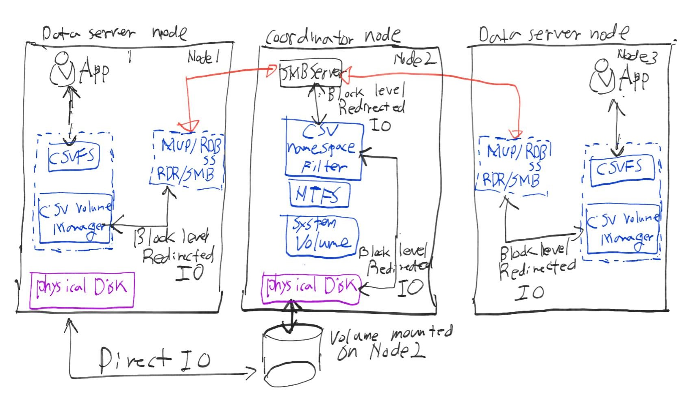
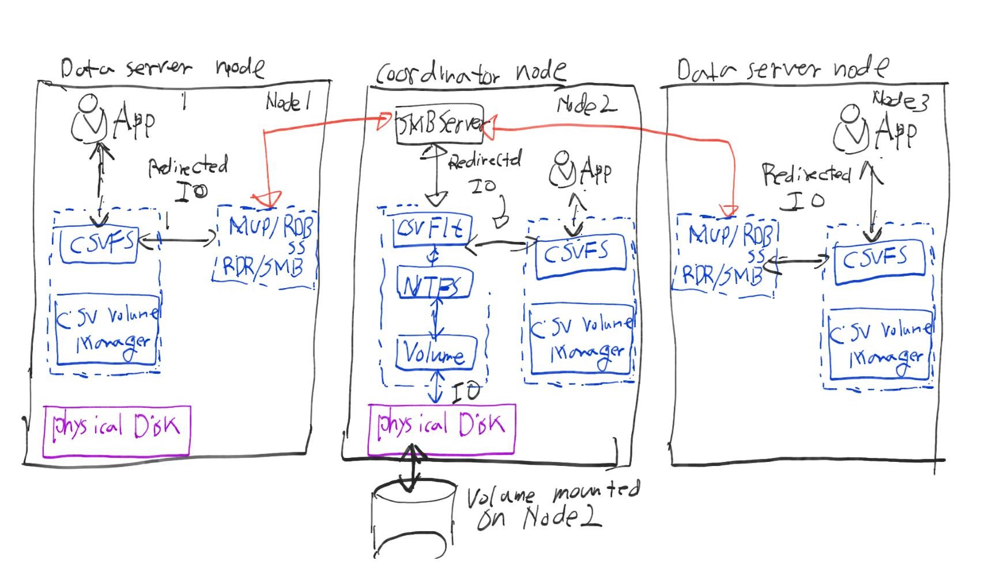

3. Cluster Shared Volume (CSV)¶
여러대의 서버가 하나의 파일시스템(NTFS, ReFS)에 동시에 접근할 수 있도록 해주는 기술이다.
다음은 CSV에서 사용되는 용어이다.
- CSV 디스크를 위한 NTFS가 마운트된 노드를 코디네이터 노드라 한다.
- 클러스터 디스크가 마운트되지 않은 노드를 데이터 서버(Data Server, DS)라 한다.
- 일반적으로 1개의 디스크는 1개의 NTFS 볼륨을 갖는다. 물론 1개의 디스크에 여러개의 볼륨을 생성할 수 있다.
- 디스크 소유권을 이전하면 모든 볼륨이 소유자로 이동한다. 단 Storage Space는 예외이다.
- NTFS는 클러스터 파일 시스템이 아니므로 오직 하나의 노드에만 마운트된다.
- CSVFS는 CSV 파일 시스템을 뜻한다.
3.1. NTFS 볼륨 스택과 CsvFlt 필터¶
코디네이터 노드에는 CsvFlt.sys 필터가 설치되어 있다. 이 필터는 사용자 모드에서 NTFS에 사용할 수 없도록 NTFS 볼륨을 보호하면서, 동시에 여러 노드가 사용할 수 있도록 NTFS 상태를 조정하고 여러가지 연산을 변환한다.
3.2. System NTFS Volume 스택과 CsvNSFlt 필터¶
일반적으로 이 볼륨과 필터는 모든 노드에 존재한다. 이 필터는 인가되지 않은 접근으로 부터 C:ClusterStorage 을 보호한다. 또한 Block Level Redirected IO를 디스크에 전달하도록 도와준다.
3.3. CSV 파일 시스템 스택과 CSV 볼륨 매니저¶
CSV 파일 시스템은 볼륨 매니저를 이용하여 여러 볼륨에 붙을 수 있다. CSV 볼륨 매니저는 csvvbus.sys를 뜻한다.
3.3.1. 데이터 흐름¶
3.4. Metadata¶
읽기, 쓰기를 제외한 연산을 메타데이터(Metadata) 연산 이라고한다. 예를들면 파일생성, 파일닫기, 이름변경, 속성변경, 파일삭제, 크기변경 등의 연산이 있다.
위 그림을 보면 Node1와 Node3은 메타데이터 연산을 SMB를 통해 Node2의 NTFS 스택으로 전달한다. 메타데이터는 언제나 NTFS 스택으로 전달된다. 반면 Node2(코디네이터 노드)의 메타데이터 연산은 같은 위치에 있는 NTFS 스택으로 전달된다.
3.5. Direct IO¶
Direct IO는 네트워크를 사용하지 않는 읽기, 쓰기 연산을 뜻한다. CSV에서는 CsvFs에서 CsvVbus를 통해 디스크에 접근한다. Direct IO는 NTFS 스택을 우회하여 디스크에 직접 도달한다.
3.6. Block Level Redirected IO¶
물리적으로 디스크에 연결되어 있지 않은 노드의 경우, 코디네이터 노드로 Redirected IO를 전송하여 읽기, 쓰기 연산을 수행한다. 코디네이터 노드는 오직 시스템 볼륨 NTFS 스택(System Volume NTFS Stack)만 사용하여 Redirected IO를 처리한다. CsvFs가 전송한 Block Level Redirected IO는 CsvNsFlt 필터를 통해 NTFS나 볼륨 스택을 거치지 않고 바로 디스크에 전달된다.
즉, Block Level Redirected IO는 데이터 서버에서 CsvVBus을 통해 코디네이터 노드로 전달되어 CsvNsFlt의 도움을 받아 Direct IO 처럼 IO가 디스크에 전달된다.
하지만, 코디네이터 노드는 IO가 발생할 경우 언제나 직접 디스크와 통신한다. 따라서 코디네이터 노드는 Redirected IO가 필요하지 않다. 예외적으로 물리적으로 디스크에 연결된 데이터 서버도 Redirected IO가 필요한 경우가 있다.
첫번째로 어댑터가 고장나거나, SAN 스위치가 고장난 경우이다. CsvVbus를 통해 Direct IO를 시도한 뒤 실패하면 코디네이터 노드를 통해 Block Level Redirected IO를 수행할 것이다. 두번째 경우는 디스크가 미러링된 Storage Space일 경우이다.
3.7. File Level Redirected IO¶
데이터 서버의 CsvFs을 통해 IO를 코디네이터 노드의 NTFS 스택으로 전달하여 디스크를 사용할 수 있도록 하는 모드이다.